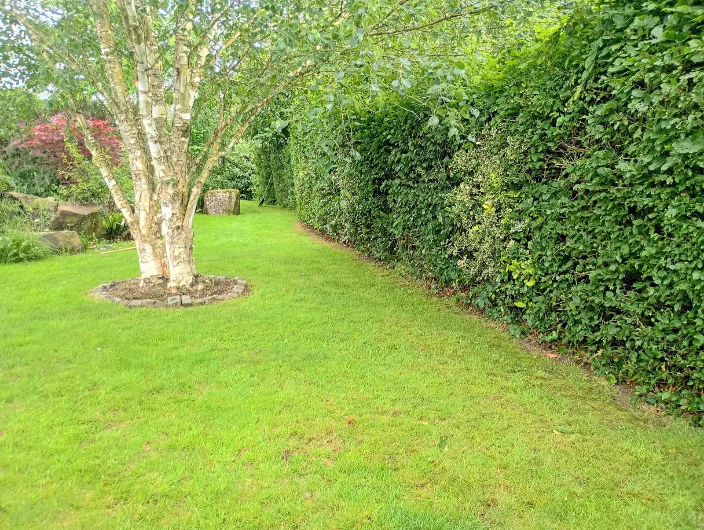
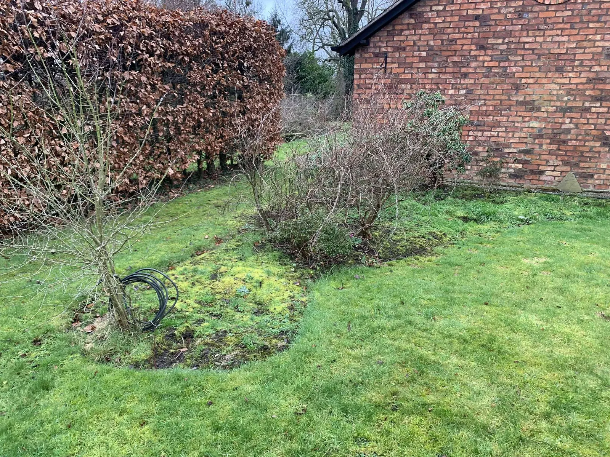
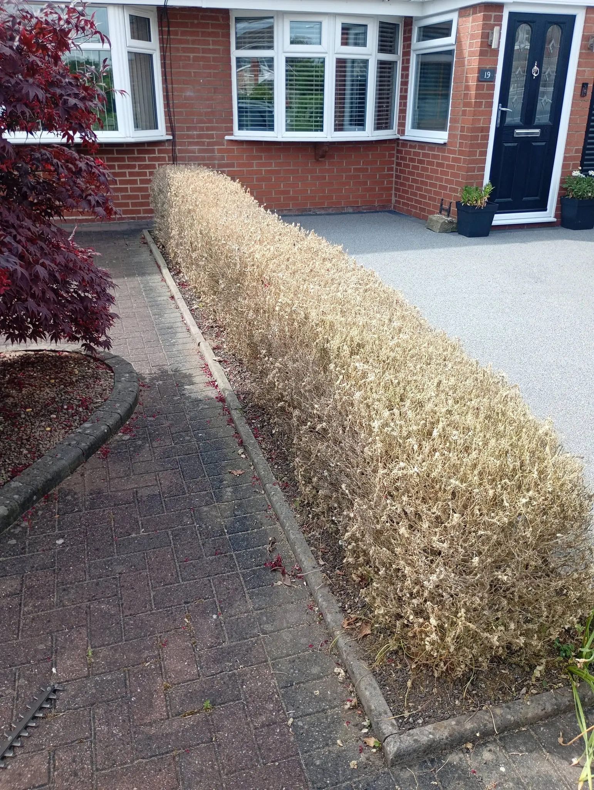
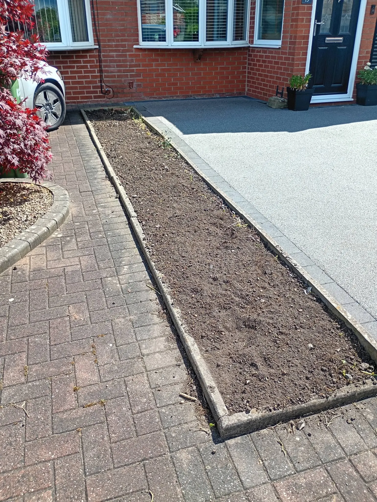
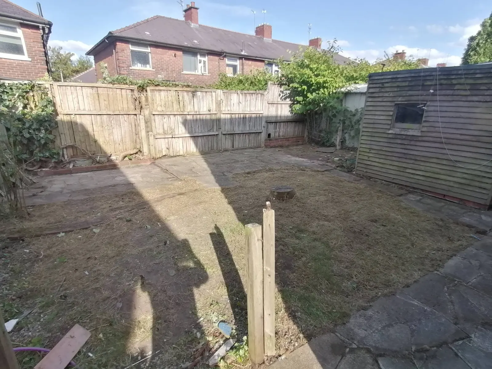
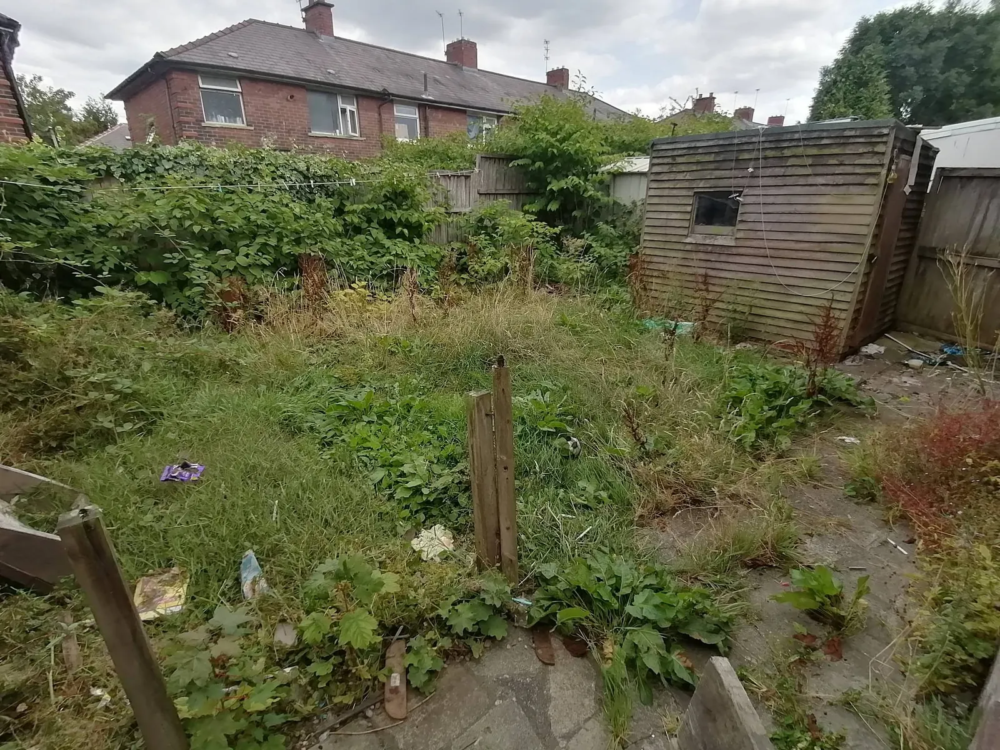
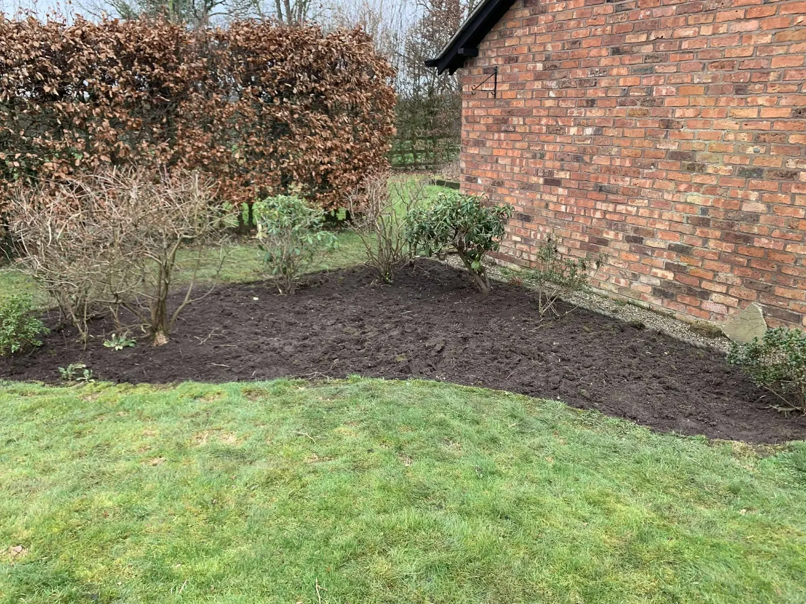
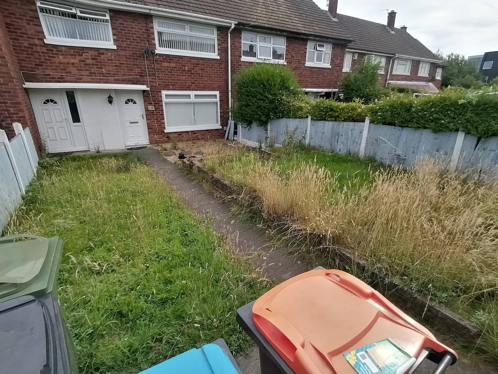
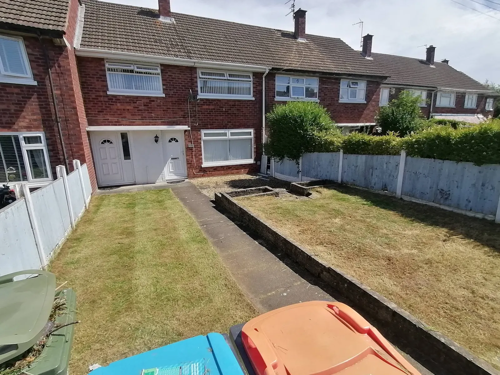
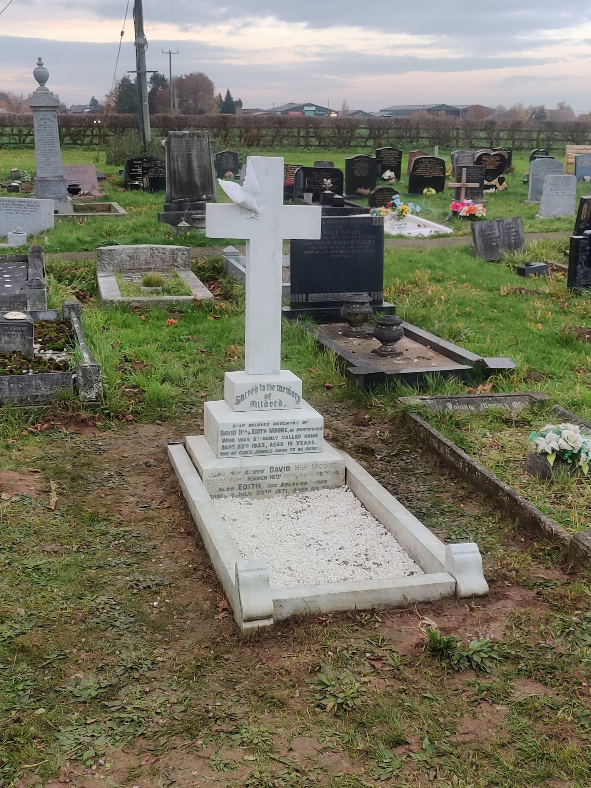

Regular Garden Maintenance
Routine visits to keep lawns, edges, beds and general outdoor areas tidy and manageable.
Reliable garden maintenance for lawns, hedges, borders and outdoor spaces — with one-off tidy ups, lawn care, jet washing and respectful grave cleaning also available.


HP Garden Services is a local garden maintenance company serving Winsford and surrounding areas. From regular lawn cutting and hedge trimming to borders, seasonal tidy-ups and one-off clearances, the focus is on keeping your outdoor space looking cared for.
Book regular maintenance or a one-off visit to get lawns, hedges, borders and outdoor areas back into shape.
Routine visits to keep lawns, edges, beds and general outdoor areas tidy and manageable.
Ideal for overgrown gardens, seasonal clear-outs or getting an outdoor space back under control.
Grass cutting, edging, hedge trimming and practical border maintenance for a cleaner finish.
Pressure cleaning for patios, paths and hard surfaces to remove built-up surface dirt and grime.
A selection of completed garden maintenance and tidy-up work from HP Garden Services.



These are matched before-and-after examples from the same jobs — not mixed gallery images.

BeforeHeavy growth removed and the garden brought back to a clean, manageable condition.

BeforeOvergrowth cut back and the border cleaned so the whole area looks cared for again.

Before
AfterLong growth cleared and edges restored for a much cleaner first impression.

AfterAlongside our garden services, HP Garden Services also provides careful grave cleaning and maintenance. This can include weeding, tidying, cleaning memorial areas, refreshing gravel and keeping the plot looking cared for when you cannot get there yourself.
From regular lawn and hedge maintenance to one-off tidy ups, the aim is simple: turn up, work carefully and leave your outdoor space looking noticeably better. Grave cleaning is available separately as a respectful additional service, shown in the section above.
Call or message HP Garden Services for regular maintenance, a one-off tidy up, lawn care or jet washing. Grave cleaning and maintenance can also be arranged.